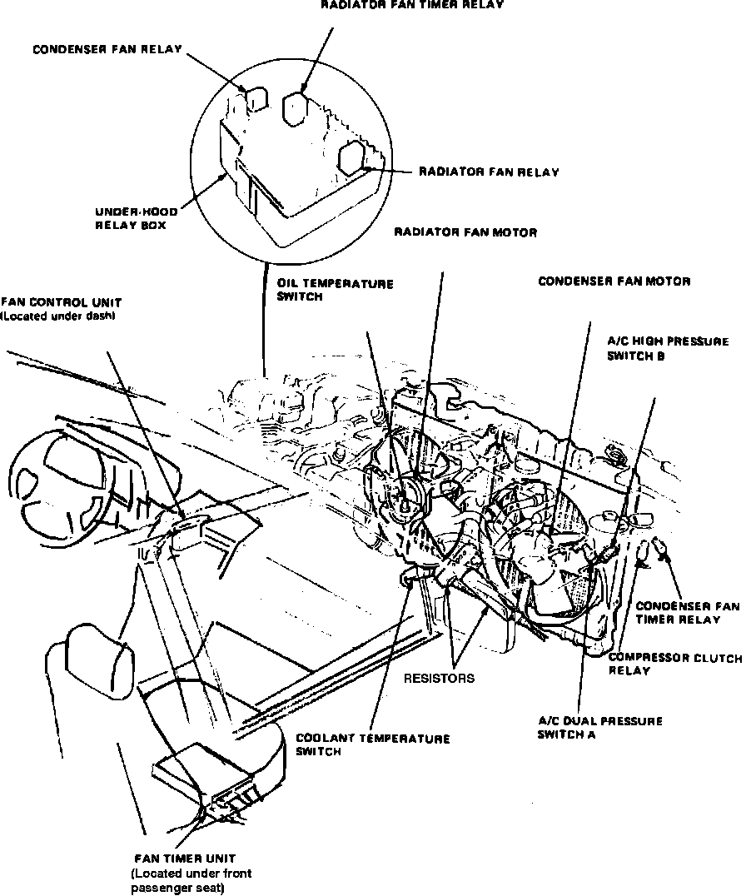

Operation CHARM
: Car repair manuals for everyone.
Home
>>
Acura
>>
1987
>>
Legend Sedan V6-2494cc 2.5L SOHC FI
>>
Repair and Diagnosis
>>
Relays and Modules
>>
Relays and Modules - Cooling System
>>
Radiator Cooling Fan Motor Relay
>>
Locations
>>
Component Locations
>>
Radiator Fan Relay
Radiator Fan Relay
Air Conditioning Components.:

Front Underhood Relay Box
Applicable to: 1987 Legend